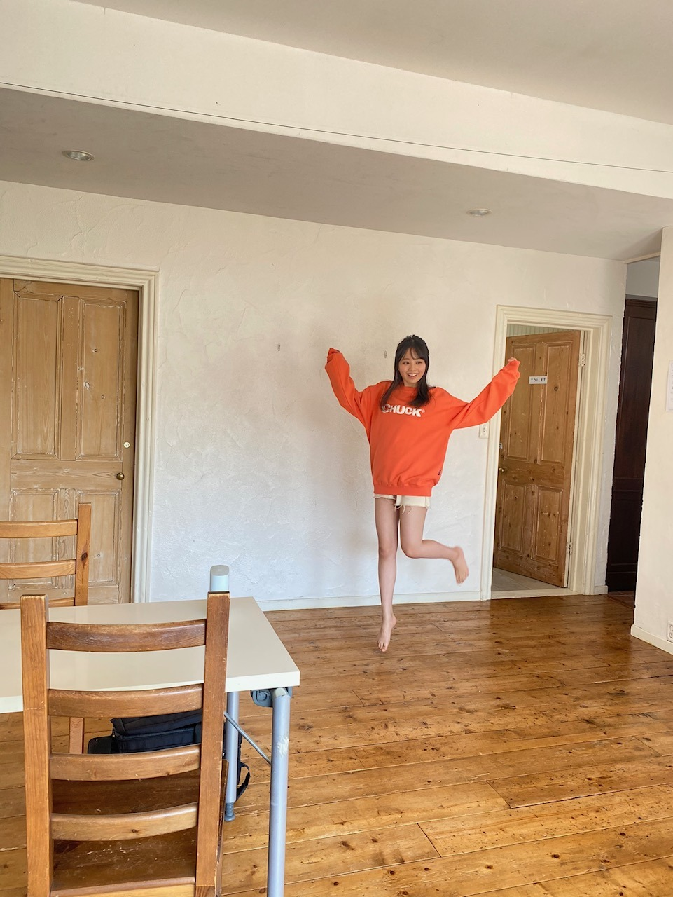

2020/1214Mon真っ白な季節~。佐藤璃果
こんにちは~
乃木坂46 4期生 岩手県出身
佐藤璃果です。
事後報告色々したいと思います！
○12月6日発売、ヤングマガジンさん
新4期生5人で登場させて頂きました。
懐かしの、みんな白い衣装での登場です。
そして、色とりどりのパーカー！
私は何色でしょうか？？？
1年間の締めくくりの季節。
インタビューも少し載っているので
是非チェックしてみてください！
私は林とくろみんと誌面を読みました₍ ᐢ. ̫ .ᐢ ₎

太陽がキラッキラな日でした。
変な右手！

おれんじでしたーー
○12月7日、レコメン！さん
乃木坂四期生メガ盛り祭り！にさやかと、くろみんと私で、出演させて頂きました！
ちゃんと褒められましたかね？
ノリさんがお優しくて、
面白くしてもらいました。
2人のお話も面白かったです。
ありがとうございました！(*^^*)
○12月14日、ノギザカスキッツ
今晩の｢ノギザカスキッツ｣に登場させて
いただきます！照負倶楽部です。
私も恥ずかしくて照れてしまいました。
お恥ずかしいですが、
ドキドキですが、
是非チェックしてみてください。
オリエンタルラジオの藤森慎吾さんも
出演して下さっています！
伊藤理々杏さん、梅澤美波さん、山下美月さん、ゆなちゃんのチャイナドレスも
とっても可愛かったんです！！\(◡̈)/
~~~質問~~~
前々回のブログのコメントから、前回のコメントの質問まで答えていきます︎︎︎︎︎☺︎
○ ミーグリではどんなこと話したいですか？
皆さんの事教えて下さい︎︎☺︎
初めましてトークは勿論ですし、
ライブの話でも、何でも！
アイドルも好きなのでオススメの方教えて下さい︎︎︎︎︎☺︎ドラマも結構見てるので、今季のドラマとか！あとは、可愛い女の子が好きなのでかわいい女の子のお話も！
真面目な相談とか聞くのも好きだし〜、
あっち向いてホイしたいです
色々考えたらポンポン浮かんできちゃった~
○ りかちゃんはもし10万円が自由に使えたら何に使いますか?
大切な人と美味しいご飯を食べに行く。
あとは、美容に使います！
○ 新しく冬服は買いましたか？もし買っていたらお気に入りの1着を見せてください♡
まだ載せていない冬服の写真がないので
レコメン！さんの時の
お洋服で許して下さい( Ꙭ)
白いニットワンピース~！

○ 受験勉強がほんとに大変で良ければ応援してください(；；)(；；)
本当に大変なんですね、、お疲れ様です
偉いです！
毎日良い1日になりますよう願います。
○ 質問では無いですが、お仕事で初めての作業をしてて毎日バタバタです。良ければ元気下さい
慣れない仕事って大変ですよね( ˙º˙ )
お疲れ様です！
○ 4期生ライブで印象に残ったことは??
感動しすぎて言葉にできない
ユニットはもちろんですし、、
寺田さんのポジションをやらせて頂けて
嬉しかったです！！
○ ライブの裏話何かあれば教えて！？
これはもう、ゆなちゃんも言っていて
私も言いたかったんですが、
｢ポピパッパパー｣からの｢ありがちな恋愛｣
のステージ移動です。
結構遠くて。
曲終わりから曲初めに間に合うように、
カメラに見切れた瞬間猛ダッシュしました。
多分、人生で1番のダッシュを記録しました、
ギリギリ間に合っていましたよね？笑
私、50m走11秒もしくは12秒なんですよ。
リハでも猛ダッシュして間に合ったので、本番も足遅い私の概念を破ってダッシュしました
○ ミーグリで緊張した時はどうすればいいですか？
深呼吸してニコニコしましょう笑
○バスケやったことありますか？？
授業でしかないです、、
○もうすぐクリスマスだね！サンタさんは何歳まで信じてた？？
小学生ぐらいまでかなぁ( ˙º˙ )
○ 最近の瑠璃はどんな感じですか？
カップルの2年目( Ꙭ)!!
○ ライブで起こったハプニングあった？
リハで階段から落ちそうになりました
○夜、テレビをつけたまま寝ちゃうことはありますか？
夜は静かじゃないと寝れないので、
ありません！
○ 璃果ちゃんが考える瑠璃色の果実ってなに？
食べられない宝石
○ 璃果ちゃんの愛が止まりません。どうすればいいですか？
照れますね(*¨*)
話しに来てください！！
○ さつま芋大好きな璃果ちゃんですが、さつま芋以外で普段から持ち歩いている食べ物はありますか？
アーモンドと、高カカオチョコ
○ 4期生ライブで1番印象に残った曲は何ですか？
僕だけの光
○ マフラーとか手袋とか買うんだけど、りかちゃんはどんなの使ってる？？
白とかチェックとか！
手袋、中学生の頃うさぎの顔が付いたやつ使ってた笑笑
○ りかちゃんがのぎおびで履いてた黒いスカートめっちゃかわいかったからどこで買ったか教えてくださいㅠ_ㅠ
嬉しいです！
最近の｢のぎおび｣かな？
あれはショートパンツなんですよ！
レザーの。
レトロガールさんで買いました。
○ 寿司打はやっぱり得意ですか？
懐かしい！！めっちゃやってました。
今はどうかな、前はだいぶ得してたんですけど、、
○ かまくらに入った事ありますか？
お家のお庭で作っていました！
岩手県でも初雪が降ったようで、実家から
雪の写真が送られてきました(*ˊ꒳ˋ*)
○ 大学や大学院で数学を専門分野として勉強している人はどんな印象ですか？
かっこいい！！
無知ですけど、どんな分野勉強しているか聞いてみたいです！
○ ついついやってしまう癖ってある？
挙動不審
○ プライベートでは何色のリップを使うことが多いですか？
コーラル系か、赤です。
○タイトルにマフラーと書いてあるけれど、今年もうマフラーは着けましたか？
昨日と一昨日、つけました。
○璃果ちゃんが冬に欠かせないものって何ですか？？
ハンドクリームです。
新しいハンドクリーム買いましたよ~
○ ミート＆グリートで4期生ライブの感想だったりを沢山伝えてもいいですか...？
もちろんです
ミーグリ取ってくれたんですかぁー？
ありがとうございます！！
今回のコメントミーグリのお話が多くて、
皆さんも楽しみにして下さっているんだなぁって思えてとても嬉しいです。
ミーグリでたくさん会いに来てくれる
皆さんありがとう！！！
コメントしてくれて本当に嬉しいです。
φ(._. )ﾒﾓﾒﾓ
私も楽しみです( ˙º˙ )♡
3次は
2020年12月17日（木）14:00 ～
2020年12月18日（金）14:00 まで
http://www.nogizaka46.com/smph/news/2020/12/-4626th.php
待ってますね~
~~~~~~~~~~~~~~~~~
最近人の優しさを
とても感じることがありましてね、
私も困っている人がいたら真っ先に
助けてあげられるような人間になりたいなと思いました。
⸜( •⌄• )⸝
だいぶ長くなったのでここでおしまい！
また今回のブログのコメントに書いて下さったら答えさせて頂きますね！！
明日は~はやしるなぴ
では、
皆さんにとって素敵な一日になりますように
髪切りたい20201214
❁
今日は、さやかから
可愛い可愛いお洋服を沢山貰えて
嬉しい日でした！！❤︎
いつかブログに載せますね！
尊敬している優しい先輩から
半袖のお洋服を頂いたのでそれも載せたかったのですが、また半袖の季節にね(´･_･`)
❁
またね。
#47 りか 47！しぃな！！

PROFILE
新4期生リレー
202104
| SUN | MON | TUE | WED | THU | FRI | SAT |
|---|---|---|---|---|---|---|
| 1 | 2 | 3 | ||||
| 4 | 5 | 6 | 7 | 8 | 9 | 10 |
| 11 | 12 | 13 | 14 | 15 | 16 | 17 |
| 18 | 19 | 20 | 21 | 22 | 23 | 24 |
| 25 | 26 | 27 | 28 | 29 | 30 | |

コメント(306)
遅くなってごめんね、
部活がまた始まってごたごたしてた~
最近どうですか？高校生だからお金がピンチでヤングマガジン買えてないよー、他の雑誌は全部買ってる！！
スプラトゥーンおもしろいですよ！やった事ありますか？
最近はテレビとか全然見てなくてだから今からアメトークかなんか見よっかなって思ってます~笑 いつかりかちゃんもバラエティーに出てるんだろうなあって思ってます！楽しみ！大好きです！
【な な り か 176】
な な り か (夏希)より
ピンチより ピン...
に 越したことはないね 笑
巻頭の飛鳥さんに真ん中ページの
蘭世さん、でんちゃん、やんちゃん
う、美しすぎる!
そして最後に新４期生
ま、眩しすぎる。特に璃果ちゃんは!
47（しいな）といえば某私鉄沿線の
椎名町（しいなまち）駅を思い出すね。
あと自分は筆圧も強かったりします。
たまに紙に穴が空いたりして（笑）
ひとまずそういう事で、ではでは。
コメントする